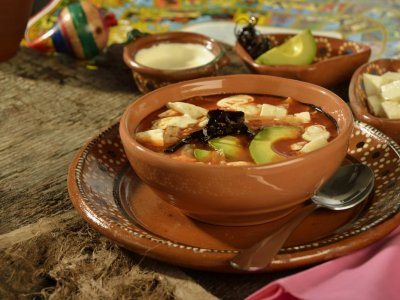

34 Recetas de sopas, cremas y caldos para consentirte
Inicio Descarga Recetas Desayunos Comidas Ensaladas Pasta Carnes y Aves Pescados y Mariscos Guarniciones Cenas Postres Bebidas Te recomendamos Saludable Recetas Pollo Pays de Queso Menús Caseros Recetas con huevo Gelatinas Tips de cocina Salud y Nutrición Recetarios Inicio Inicio Descarga Recetas Desayunos Comidas Ensaladas Pasta Carnes y Aves Pescados y Mariscos Guarniciones Cenas Postres Bebidas Te recomendamos Saludable Recetas Pollo Pays de Queso Menús Caseros Recetas con huevo Gelatinas Tips de cocina Salud y Nutrición Recetarios Inicio
Las Recetas de Comida y Cocina Fáciles, de toda la vida.
Inicio Recetas de Cocina 34 Recetas de sopas, cremas y caldos para consentirte Recetas de Cocina34 Recetas de sopas, cremas y caldos para consentirte
Por Josselin Melara junio 8, 2020 9 Comentarios
Califica este contenido!
Enviar voto
Promedio 4 / 5. Votos: 425
Ya sea para esos días fríos o para consentirte con una comida casera, te encantará probar estas recetas de sopas, caldos y cremas.
Origen de las sopas, cremas y caldos
El caldo es mucho más antiguo, su historia data de la etapa Paleolítica donde las personas comenzaron a hacer sus primeros experimentos en la cocina, uno de ellos fue vaciar en agua caliente trozos de vegetales y carne para poder suavizarlos y ablandarlos, dando como resultado un caldo rico en sabor y nutrientes pues el agua utilizada adquiría el sabor de los ingredientes cocidos.
Te interesa leer: Descubre los 7 increíbles beneficios del caldo de pollo
Te interesa leer: Aprende a preparar un caldo de hueso fácilmente
Beneficios de estos platillos
La sopa es un súper alimento pues te brinda carbohidratos, proteínas, grasas, vitaminas y minerales. Dependiendo de la receta, estos platillos son muy completos. Tras la cocción de los vegetales, el caldo que se obtiene es rico en vitaminas y minerales. La sopa es un alimento de fácil digestión. Son una fuente de energía y nutrientes.Te interesa leer: 12 recetas de sopas y caldo de pollo para apapacharte
TIPOS DE SOPAS, CREMAS Y CALDOS
Caldos o sopas claras. Su aspecto es translúcida y de tonalidad amarilla o marrón. Puede contener carne y verduras, por lo general, se inicia con un caldo que tiene como base los componentes aromáticos que resaltan el ingrediente principal. Sopa espesada. Con ingredientes ricos en fécula como verduras, frutas y cereales. Cremas. Sus ingredientes principales son la leche y/o crema, así como maicena o mantequilla y algún alimento rico en fécula para darle cierto espesor. Sopas frías. Su base son ingredientes como verduras, yogur, hierbas frescas. Algunas de las recetas más famosas en el mundo de la gastronomía son el gazpacho andaluz de España, la sopa taratar de Bulgaria y la okroshka de Rusia.Te interesa leer: Recetas de sopa de tortilla
SOPAS, CREMAS Y CALDOS MEXICANOS
Sopa de tortilla. Una deliciosa receta originaria del estado de Tlaxcala Sopa tarasca. Receta del estado de Michoacán, es hecha a base de frijol bayo, caldo de pollo y jitomate. Sopa de lima. Como su nombre lo dice, es hecha a base de lima y chile habanero. Es originaria del estado de Yucatán. Caldo tlalpeño . Surgió en San Agustín de las Cuevas en el siglo XVII, ahora Tlalpan. Se dice que Antonio López de Santa Anna difundió en el resto de la república esta rica receta haciéndola famosa. Chilpachole. Este rico platillo con jaibas es originario de la región de Sotavento en Veracruz34 RECETAS DE SOPAS CREMAS Y CALDOS PARA CONSENTIRTE
Ver Recetas:
Cómo hacer sopa de tortilla tradicional
Te compartimos como hacer sopa de tortilla tradicional, una de nuestras recetas mexicanas favoritas.
Sopa de tortilla: receta casera fácil y rápida para prepararla
Te decimos como preparar sopa de tortilla casera, Uno de los más tradicionales platillos de la comida mexicana que sin duda te va a conquistar.
Cómo preparar sopa de médula
La sopa de médula es uno de los platillos típicos de la comida mexicana. Si no la has probado, conoce nuestra receta y cocínala en casa hoy mismo. ¡Buen provecho!…
Cómo preparar sopa castellana en casa
Hoy traemos para ti esta deliciosa sopa castellana, originaria de España. Si no la has probado, es momento de que la hagas en casa y consientas a tu paladar. Sopas,…
Sopa de papa con tocino
¡Nueva receta! Sí o sí tienes que darle una oportunidad a esta deliciosa sopa de papa con tocino casera. ¡Te encantará! Sigue leyendo y conoce los ingredientes que necesitas. Sopas,…
Crema de chile poblano con esquites asados
Esta crema de chile poblano con esquites asados es uno de los platillos de la comida mexicana que no puedes dejar de probar. Sigue nuestra receta y aprende a hacerla.…
Crema de haba con camarón y nopal
Hoy no prepares lo mismo de siempre, sorprende a todos en casa con esta rica crema de haba con camarón y nopal. ¡Conoce qué ingredientes necesitas! Sopas, cremas y caldos…
Sopa fría de chícharo y menta
¡Amamos probar nuevos sabores! Si te pasa lo mismo, aprende a cocinar esta deliciosa sopa fría de chícharo y menta, una verdadera delicia para tu paladar. Sopas, cremas y caldos…
Crema de brócoli con poro
Si quieres que tu hijo o nieto amen el sabor de estas verduras, te recomendamos preparar una rica crema de brócoli con poro. Hacerla es muy sencillo. Aprende nuestra receta.…
Cómo hacer crema de pera
Sí, la crema de pera existe y nosotros tenemos la receta. Aprovecha la temporada de esta jugosa fruta y disfrútala en este platillo. ¡Buen provecho! Sopas, cremas y caldos mexicanos…
Sopa verde de mariscos
Si se te antoja probar algo nuevo y con un gran sabor, te recomendamos esta receta de sopa verde de mariscos. Sigue leyendo y conoce todo lo que necesitas para…
Cómo hacer crema de elote frito
Si al igual que nosotras amas cocinar en casa, prepara esta deliciosa crema de elote frito y disfruta de una comida casera junto a toda tu familia. Esperamos te guste…
Sopa de flor de calabaza
Al menos una vez en la vida tienes que probar esta exquisita sopa de flor de calabaza. Hacerla es muy fácil y valdrá la pena. ¡Buen provecho! Sopas, cremas y…
Cómo preparar crema de verduras
Existen recetas que jamás van a pasar de moda, por ello, queremos que aprendas a hacer crema de verduras, un platillo con mucho sabor. Sopas, cremas y caldos mexicanos La…
Sopa de jitomate rostizado con arroz
Hoy cocina esta deliciosa sopa de jitomate rostizado con arroz, estamos seguras que en la cocina tienes la mayoría de los ingredientes que necesitas para prepararla. Sopas, cremas y caldos…
Sopa de hongos al epazote
Fácil y práctica, así es esta sopa de hongos al epazote. Sólo te tomará 10 minutos hacerla. ¿Se te antojó? ¡Manos a la obra! Sopas, cremas y caldos mexicanos La…
Sopa de papa, jalapeño y elote dulce
En tu próxima reunión familiar en casa prepara esta rica y sencilla sopa de papa, jalapeño y elote dulce. No olvides contarnos qué tal te salió. Sopas, cremas y caldos…
Sopa de quinoa con lenteja
¡Nueva receta! Conoce cómo preparar la sopa de quinoa con lenteja y descubre por qué es uno de los platillos consentidos de los vegetarianos. Sopas, cremas y caldos mexicanos La sopa…
Sopa fría de guayaba
Conoce nuestra deliciosa receta de sopa fría de guayaba y aprovecha la temporada de esta fruta con gran sabor. Prepárala y cuéntanos qué tal te salió. Sopas, cremas y caldos…
Sopa de zanahoria con toques de mandarina
Te encantará probar esta deliciosa sopa de zanahoria con toques de mandarina. Sigue leyendo y conoce lo que necesitas para preparar esta fácil receta. Te interesa leer: 14 Recetas de…
Crema de pollo y verduras
¡Hora de cocinar! Aprende a hacer nuestra rica crema de pollo y verduras, una verdadera delicia, sin duda no te arrepentirás de prepararla. Sopas, cremas y caldos mexicanos La sopa…
Crema de dos frijoles
En Cocina Fácil nos encanta brindarte nuevas ideas en la cocina. Hoy prepara esta rica crema de dos frijoles para que toda tu familia la pruebe. ¡Buen provecho! Sopas, cremas…
Sopa de lentejas con chorizo y plátano frito
Tenemos una súper receta para ti. Aprende a preparar sopa de lentejas con chorizo y plátano frito, ¡la disfrutarás muchísimo! Sopas, cremas y caldos mexicanos La sopa es un súper…
Caldo de pollo con tallarines
El caldo de pollo con tallarines es una receta clásica, por ello, queremos que aprendas a prepararla para que la compartas con toda tu familia. Sopas, cremas y caldos mexicanos…
Sopa de cebolla con costra de hojaldre
Para esos días de frío o lluvia en los que se antoja comer algo calientito y delicioso no existe mejor remedio que una deliciosa sopa de cebolla con costra de hojaldre,…
Crema de almendras y jengibre
Lúcete con toda tu familia al preparar esta deliciosa crema de almendras y jengibre. Revisa los ingredientes que requieres y ¡a cocinar! Sólo tardarás 20 minutos en tenerla lista. Aprende…
Crema de pimiento amarillo asado
Si necesitas inspiración en la cocina, prepara una nueva receta. Aquí la crema de pimiento amarillo asado, nuestra recomendación del día. Lo mejore es que sólo tardarás 30 minutos en…
Crema de garbanzos con chorizo
Con esta deliciosa crema de garbanzos con chorizo recordarás el gran sazón que tenía tu abuelita. Esta clásica receta sólo te tomará 30 minutos prepararla. ¿Ya se te antojó? Aquí…
Cómo hacer sopa de almejas
Si te has preguntado cómo hacer sopa de almejas aquí te explicamos paso a paso cómo preparar esta riquísima receta. Anota los ingredientes y la próxima vez que tengas reunión…
Crema de frijol con juliana de zanahoria
¿Quién quiere un plato de esta crema de frijol con juliana de zanahoria? Ideal para una tarde familiar. Sigue nuestra receta, no te tomará más de 20 minutos realizarla. ¡Que…
Caldo de pollo picosito
A través de un caldo de pollo bríndale todo tu amor a la familia. Esta es una de las recetas más fáciles que puedes hacer en la cocina así que…
Sopa de fideo con higaditos
Muchos aseguran que la sopa de fideo con higaditos es una de las recetas más ricas y clásicas de la cocina mexicana. Si no la has probado, te estás perdiendo…
Caldo de res con bolitas de masa
El caldo de res con bolitas de masa es una receta tradicional. Si tu abuelita antes la cocinaba en casa, ahora te toca el turno de prepararla para compartirla con…
Sopa de chayote con guajillo
Tienes que probar la sopa de chayote con guajillo, es una de nuestras recetas consentidas. No es por nada pero te sorprenderá el gran sabor de este platillo. ¿Se te…
Sopa de flor de calabaza con nopales
Si lo que buscas es que tu familia coma más verduras, haz una sopa de flor de calabaza con nopales. No es por nada pero esta receta sabe muy bien.…
Sopa de miso con verduras
¡Nuevas recetas, más sabores! Te recomendamos cocinar una sopa de miso con verduras para que sorprendas el paladar de todos en casa. ¿Qué es el miso? El miso es un…
9 Comentarios 3 Facebook Twitter Google + Pinterest Anterior12 recetas con fajitas de pollo para despertar todos los antojos
SiguienteMascarilla casera de canela para el cabello que debes probar
Estas Recetas te Encantarán
5 recetas para cocinar con pulque
agosto 14, 2019Guisado de res con papas
junio 8, 2021Camarones de coco con mermelada de mango con
octubre 7, 202010 recetas de pasteles salados para compartir
octubre 1, 2019Placeres navideños
diciembre 16, 202020 recetas de comida italiana directo en tu
enero 13, 202010 dulces recetas con piloncillo
julio 30, 201927 recetas de guisados de pollo que no
marzo 29, 202110 cócteles con mezcal para brindar a la
julio 8, 2020Frescas y deliciosas recetas con sandía para cada
julio 16, 2019Lo más leído
130 ensaladas saludables para cada día del mes
27 Alimentos que te ayudarán a bajar la panza y lograr tu peso ideal
3Enamórate de estas 23 recetas vegetarianas
424 recetas de comida mexicana tradicionales y deliciosas
516 recetas de espinacas que te harán amarlas
Facebook Twitter Instagram YoutubeEDITORIAL TELEVISA S.A. DE C.V. TODOS LOS DERECHOS RESERVADOS. TBG - EDITORIAL TELEVISA - LIFESTYLES - FOOD
Regresar al inicio Este sitio utiliza cookies para ayudarnos a mejorar tu experiencia cada vez que lo visites. Al continuar navegando en él, estarás aceptando su uso. Podrás deshabilitarlas accediendo a la configuración de tu navegador. Leer Más Acepto Privacy & Cookies Policy
Privacy Overview
This website uses cookies to improve your experience while you navigate through the website. Out of these cookies, the cookies that are categorized as necessary are stored on your browser as they are as essential for the working of basic functionalities of the website. We also use third-party cookies that help us analyze and understand how you use this website. These cookies will be stored in your browser only with your consent. You also have the option to opt-out of these cookies. But opting out of some of these cookies may have an effect on your browsing experience.
Privacy OverviewThis website uses cookies to improve your experience while you navigate through the website. Out of these cookies, the cookies that are categorized as necessary are stored on your browser as they are as essential for the working of basic functionalities of the website. We also use third-party cookies that help us analyze and understand how you use this website. These cookies will be stored in your browser only with your consent. You also have the option to opt-out of these cookies. But opting out of some of these cookies may have an effect on your browsing experience.
necessary Always EnabledNecessary cookies are absolutely essential for the website to function properly. This category only includes cookies that ensures basic functionalities and security features of the website. These cookies do not store any personal information.
non-necessaryAny cookies that may not be particularly necessary for the website to function and is used specifically to collect user personal data via analytics, ads, other embedded contents are termed as non-necessary cookies. It is mandatory to procure user consent prior to running these cookies on your website.
